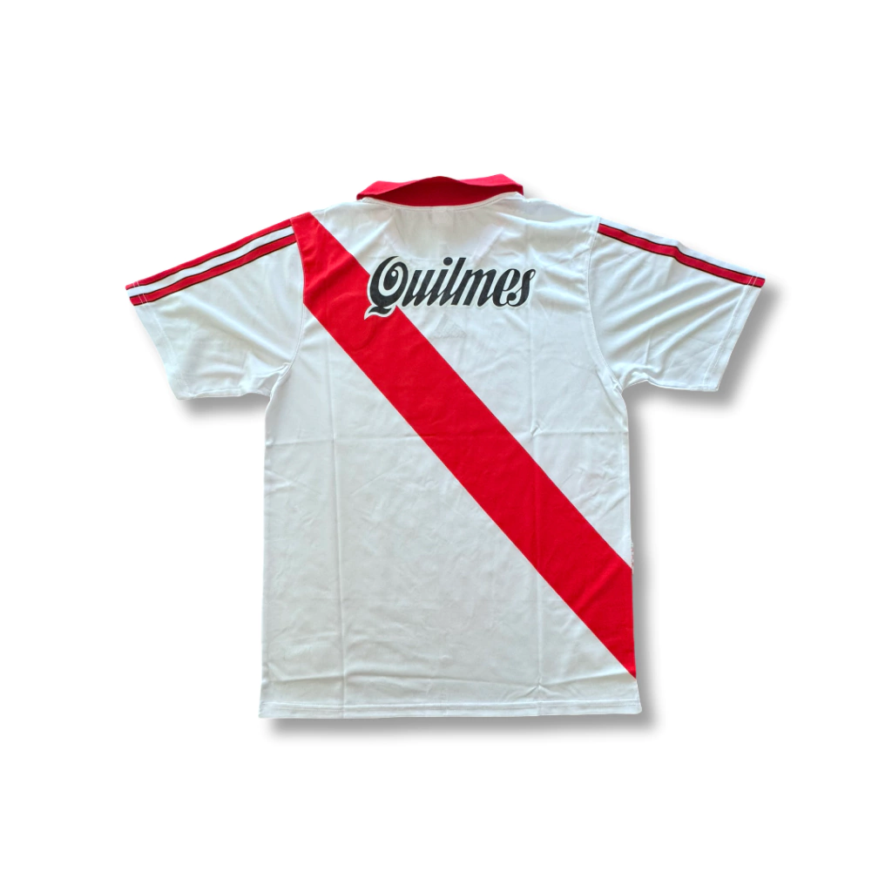
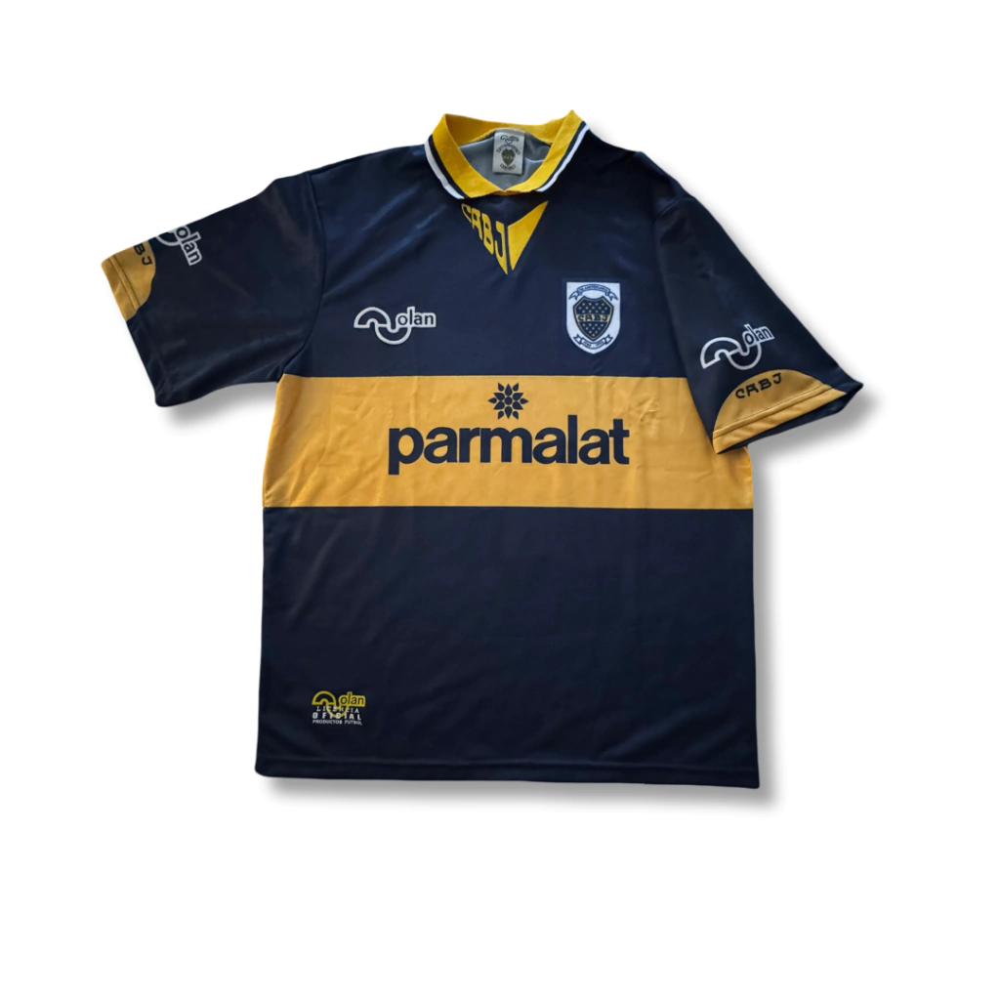
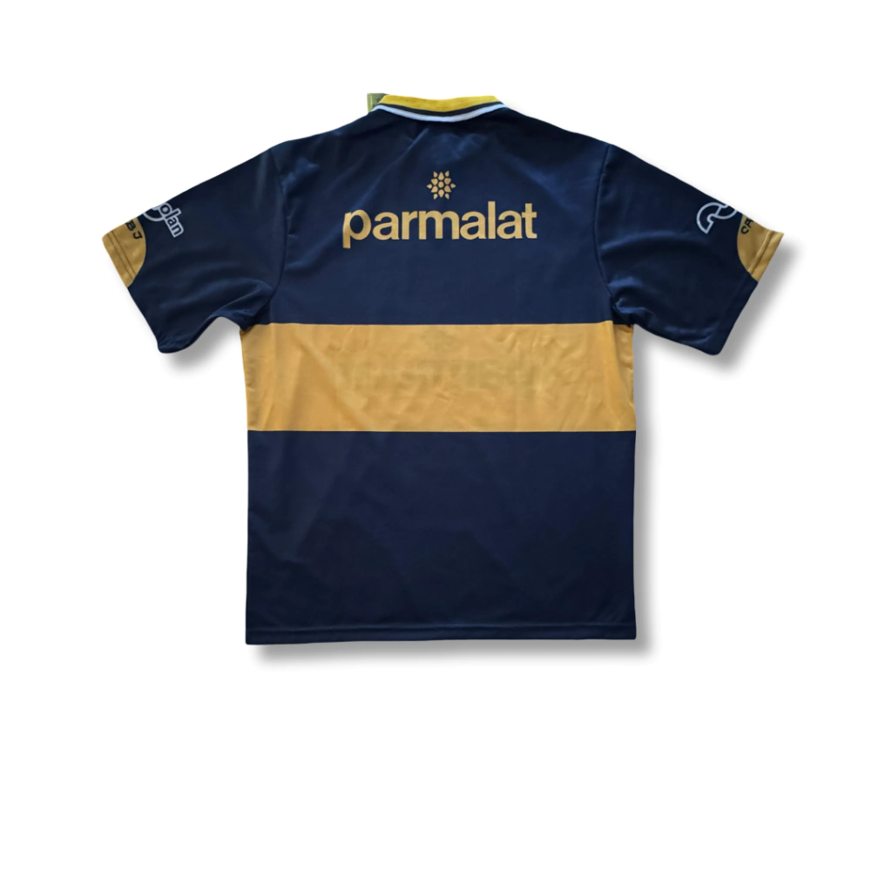
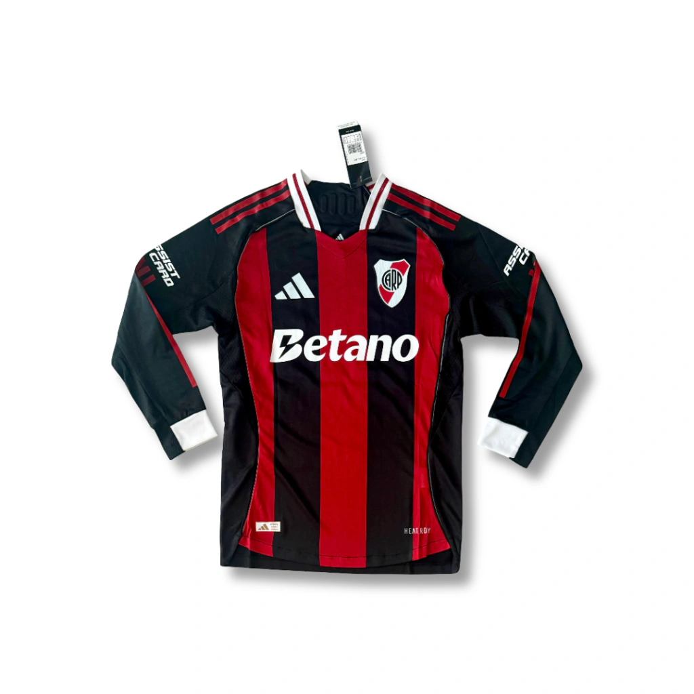
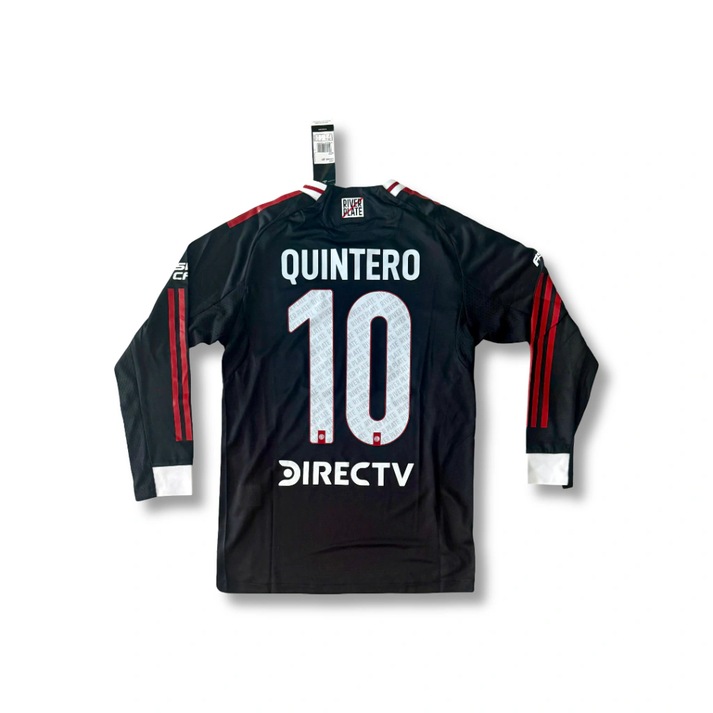
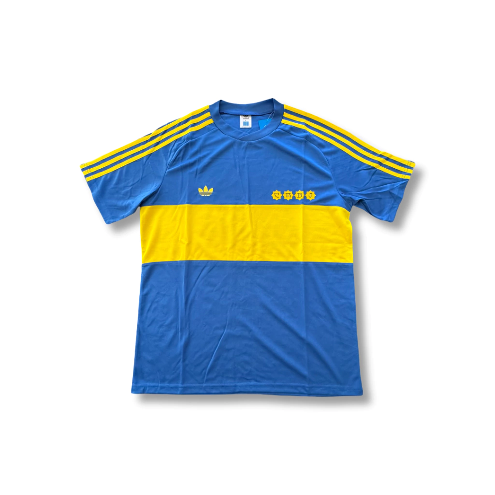
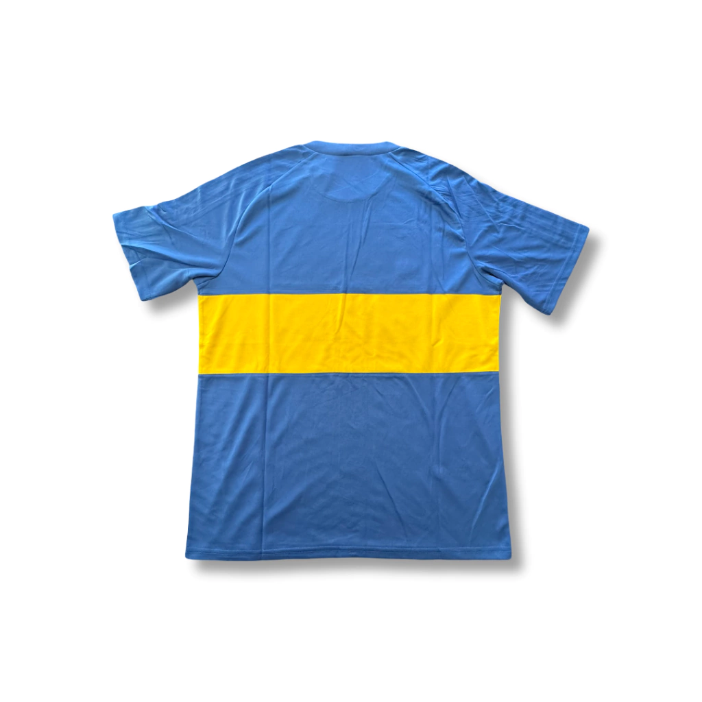

CONOCE LAS MEJORES CAMISETAS DE ARGENTINA


Camiseta titular del River Plate para la temporada 1999.


Camiseta titular de Boca Juniors para la temporada 1996.


Camiseta suplente del River Plate para la temporada 2026 (Version Jugador) con el numero 10 de Quintero y mangas largas.


Camiseta titular de Boca Juniors para la temporada 1981.